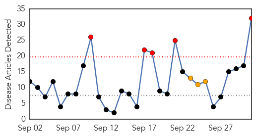

Ebola
30-Day Web Trend
0 alerts, 0 warnings

30-Day Twitter Trend
0 alerts, 0 warnings

Article Locations

Article Confidences

Top Articles:
- 1.000
- UH researcher’s book addresses, analyzes Ebola epidemic
- 0.999
- Mānoa: UH researcher's book addresses, analyzes Ebola epidemic
- 0.999
- International Cooperation the Key to Stopping Ebola
- 0.999
- World Health Organization Declares Liberia Ebola-Free Once Again After The Outbreak’s Re-emergence In June : World : koreaportal
- 0.993
- Speaker sheds light on Ebola outbreak – Vidette Online
- 0.991
- Is SA ready for a return of Ebola?
- 0.985
- Surviving Ebola Is Just the First Step
- 0.984
- The cost-effective way to protect against future Ebola outbreaks
- 0.983
- Ebola outbreak could have been mitigated, responder says
- 0.978
- First suspected Ebola case in Myanmar
- 0.951
- Kids With Ebola, Bird Flu Or TB? Texas Children's Hospital Will Be Ready
- 0.951
- Kids With Ebola, Bird Flu Or TB? Texas Children's Hospital Will Be Ready
- 0.938
- "It could have been prevented": Ebola Warrior speaks in the Twin Cities
- 0.938
- Nigerian carrier Arik to resume flights to Liberia next week
- 0.936
- Public advised against complacency on Ebola
- 0.917
- Chip-based technology enables reliable direct detection of Ebola virus
- 0.872
- Mobile Radio Skits Raise Ebola Awareness in Sierra Leone - Sierra Leone
- 0.849
- Cuba Headlines – Cuba News, Breaking News, Articles and Daily Information
- 0.739
- Sierra Leone: Sierra Leone Remote Monitoring Update September 2015
- 0.727
- OSF St. Joseph Medical Center Prepping for Pandemic
- 0.623
- Africa Information
- 0.593
- ‘Nigeria can soar higher health wise’
- 0.542
- UN, Gates Foundation Collaborate on Primary Health Care, Malaria
Top Tweets:
- 0.818
- Ebola outbreak could have been mitigated responder says - Bloomington Pantagraph http://t.co/Qv4UMjrxGZ ebola EVD
- 0.799
- Kids With Ebola Bird Flu Or TB? Texas Children's Hospital Will Be Ready - Capital Public Radio News http://t.co/8D8QQEG0C3 ebola EVD
- 0.777
- RT: Dr Lawal Bakare - that started talking about the Ebola - Africa Story . @africansmatter SABAAGM2015
- 0.774
- Outbreak tails can be looooooong: West African Ebola outbreak drags on with 4 new cases in Guinea. http://t.co/jvvmaRQnbc
- 0.757
- Speaker sheds light on Ebola outbreak - Vidette Online http://t.co/MqKbRFl3a0 ebola EVD
- 0.706
- NewLink wins $8.1M from DOD to advance Ebola vaccine - FierceVaccines http://t.co/i7lOvRHtir ebola EVD
- 0.648
- The Body Collectors of the Ebola Epidemic https://t.co/R8RSLX3MHQ
- 0.593
- .@WHO Ebola Emergency Committee meets today for 7th time. Not expecting they will say Ebola is no longer an emergency. Not till it's done.
- 0.565
- RT: SHOWCASE: @EbolaAlert contributed 1.8M of 2M impressions for SABAagm2015 science ebola media @PublicMediaPMA http://…
Influenza
30-Day Web Trend
5 alerts, 3 warnings

30-Day Twitter Trend
0 alerts, 0 warnings

Article Locations

Article Confidences

Top Articles:
- 1.000
- Protect yourself from the flu
- 0.998
- Flu season begins, but experts say vaccine should do the trick
- 0.998
- www.cowracommunitynews.com
- 0.998
- Hundreds show up for Drive-Thru Flu Clinic
- 0.997
- Officials hoping this year’s flu shot better than last year’s
- 0.996
- Flu season begins, but experts say this year's vaccine should do the trick
- 0.994
- Flu season begins: Will vaccine be effective?
- 0.993
- WDH Warns About Overlooking Need For Flu Vaccination
- 0.993
- Flu shot clinics continue in Madison County for 2015 flu season
- 0.992
- OCTOBER FLU VACCINE CLINICS SCHEDULED
- 0.980
- Four-Strain Influenza Vaccine Available this Flu Season in Public Health Programs -- TORONTO, Sept. 30, 2015
- 0.948
- Adult flu shots offered free in Lincoln County
- 0.936
- GCHD announces Flu Clinic dates
- 0.932
- Flu Season is Here
- 0.929
- 165 hospitals under the scanner
- 0.902
- Bird Flu Has U.S. Farmers Building Fences, Hosing Down Visitors
- 0.895
- Today's stories from newspapers in Flamborough
- 0.875
- Understanding The 2015 Wisconsin Avian Flu Epidemic: The State's Response
- 0.871
- Living with Lyme Disease
- 0.863
- 'Up to five million Italians to catch flu this year'
- 0.846
- After life-threatening scare, Sampson County family makes flu vaccine a priority :: WRAL.com
- 0.812
- Flu Shot As Craig's List Ad
- 0.782
- Flu shot schedule released
- 0.766
- Alaska Regional Hospital to offer free drive-thru flu shots
- 0.761
- Kaiser Permanente health care workers ratify deal that includes a flu vaccination policy
- 0.751
- Understanding The 2015 Wisconsin Avian Flu Epidemic: Preparing For The Future
- 0.751
- September 30, 2015 Archives
- 0.751
- September 30, 2015 Archives
- 0.704
- Flu season has arrived
- 0.593
- Therapeutic Focus: Vaccines
- 0.571
- Bird flu: Government intensifies sensitisation on bio-security
- 0.545
- Officials seek growers’ help in avian flu fight
Top Tweets:
-
No tweets found for Oct 01, 2015